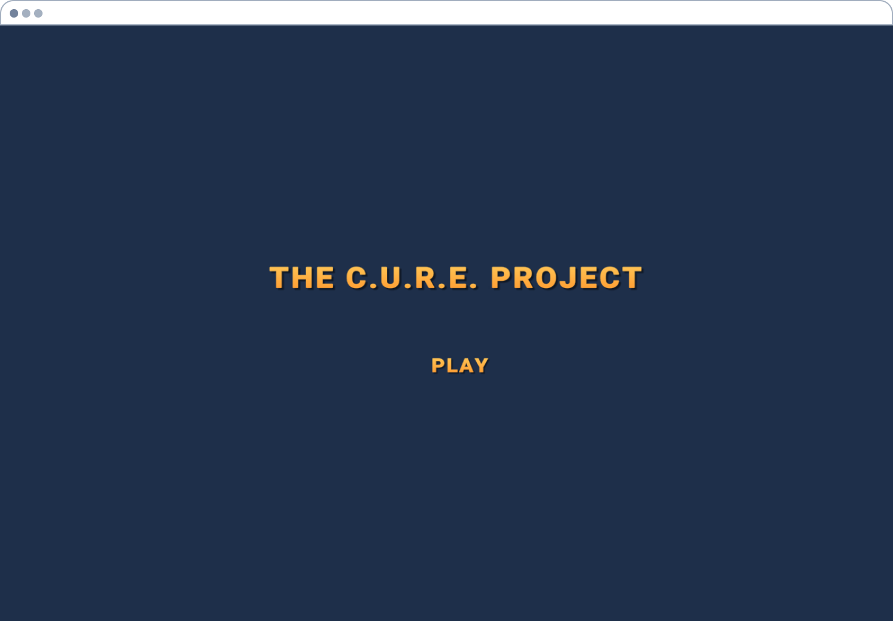
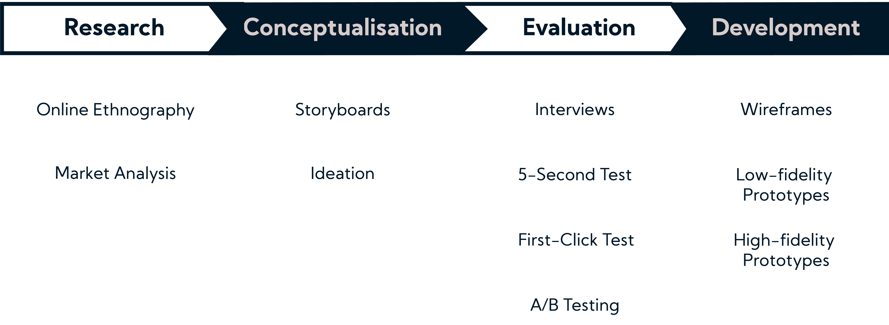
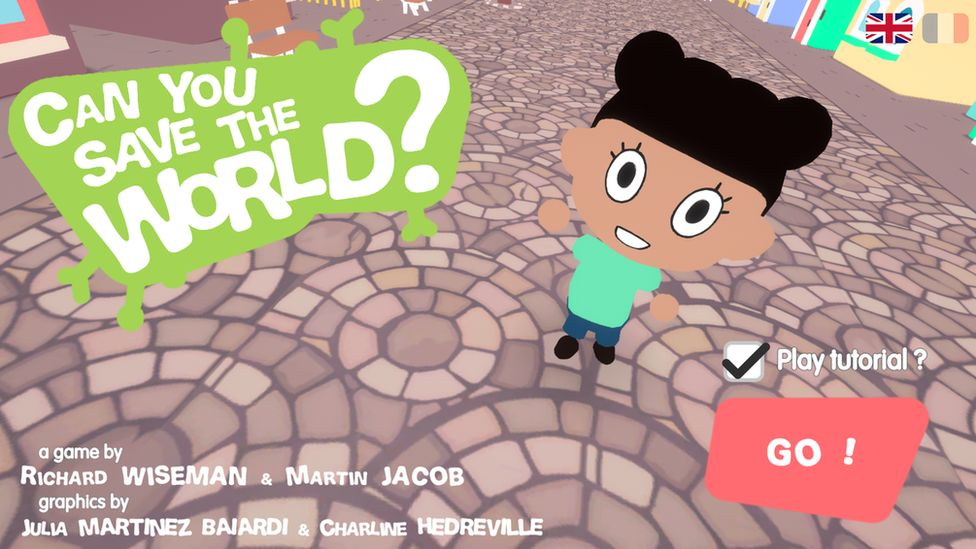
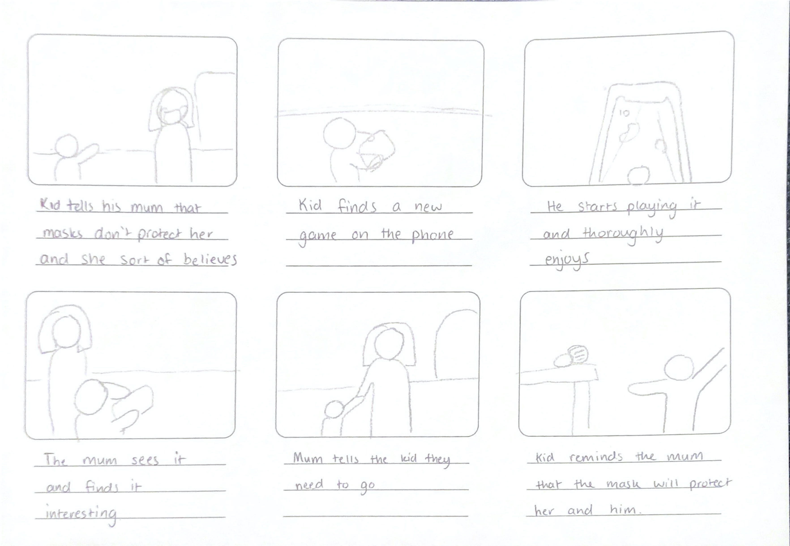
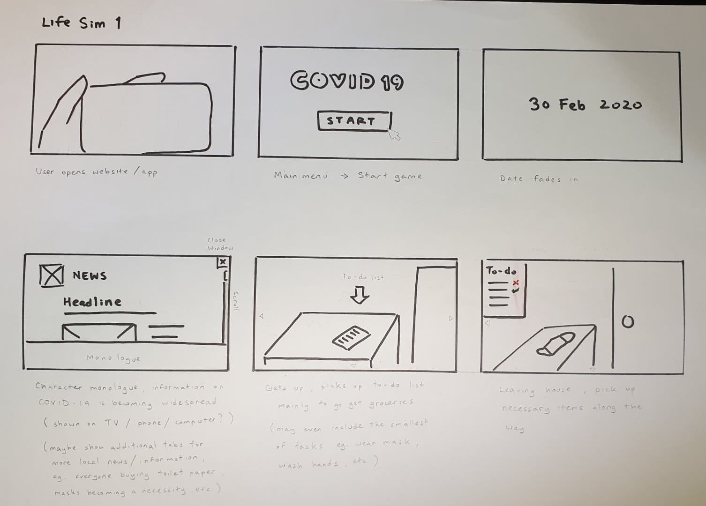
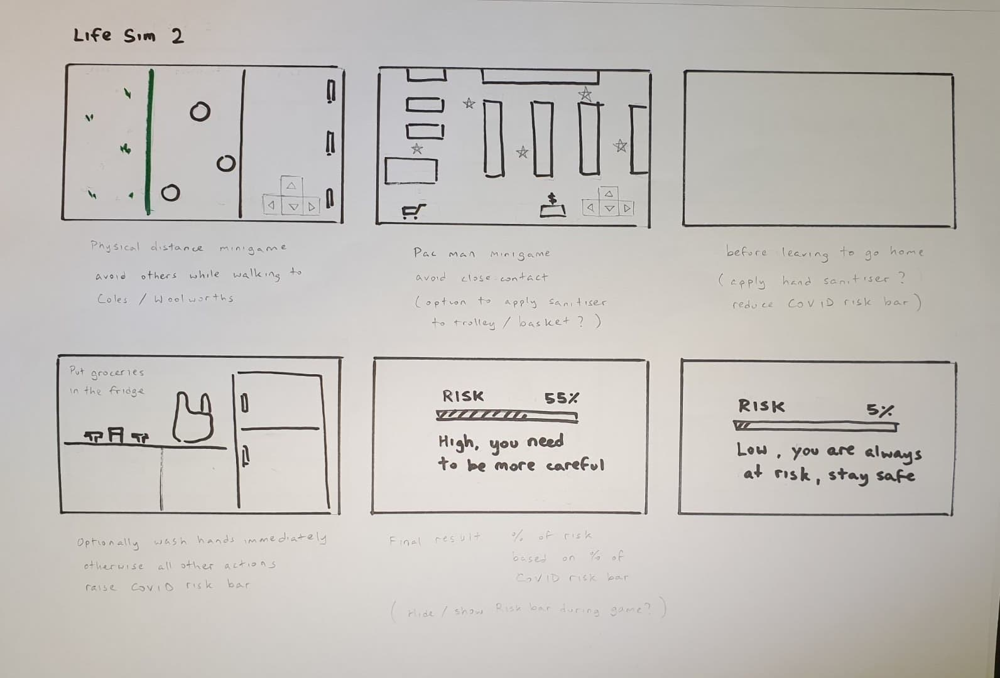
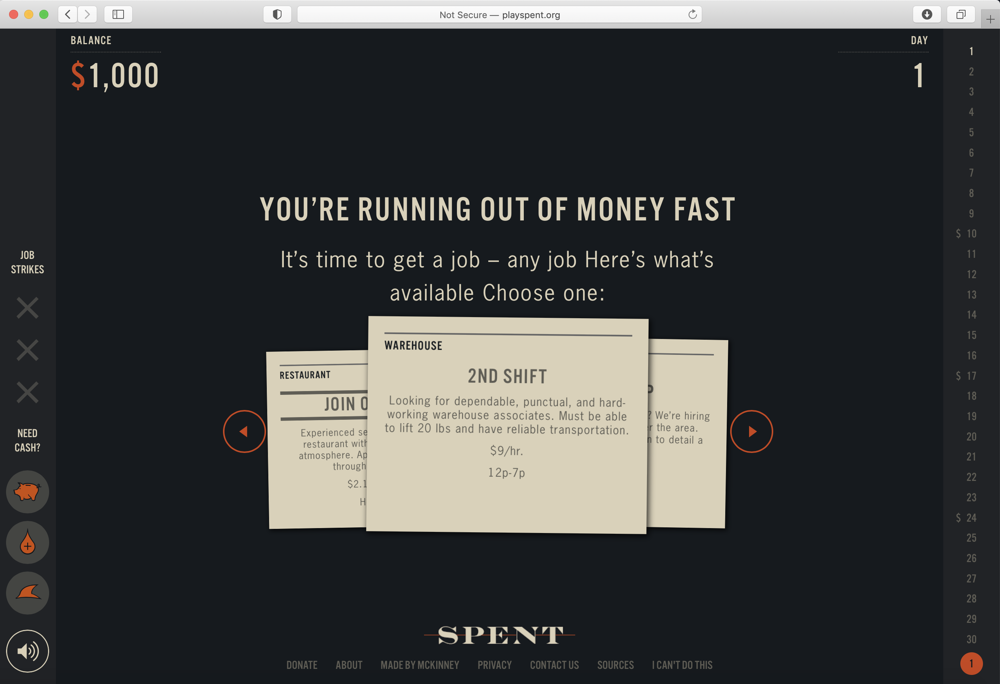
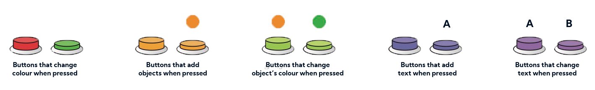
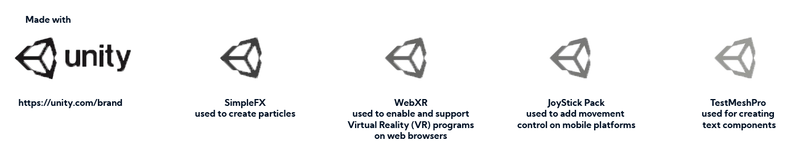

There remain numerous people who refuse to believe in the dangers of COVID-19, and do not practice the recommended hygiene practices despite high volumes of deaths and infections. The CURE Project was created to educate people about the dangers of COVID-19 and measures that can be taken to ensure the safety of themselves and others.
Brief: Designing Against Misinformation
Misinformation is becoming a massive problem on the internet and is dividing societies on important issues. It can take on different forms – such as memes, videos, social media posts, news articles, etc. In response to this growing problem, companies like Facebook, have been looking at ways to identify false news. This is a huge undertaking however and should not be tackled by tech companies alone.
The world has been battling the Coronavirus disease 2019 (COVID-19) for some time now, which does not currently have any vaccines or treatments. In this brief we task you with providing information about COVID-19 to the general public. You are required to conceptualise, design and ultimately create a high-fidelity prototype of a web application which captures one or more of the United Nation’s (UN) coronavirus key messages.
Role
Class
Interactive Product Design Studio (12 weeks)
Team
Tools
Problem
The rapid growth of Coronavirus disease (COVID-19) infections has been attributed to misinformation and the misunderstanding of safety practices, especially regarding any new lifestyle changes individuals were recommended that affects their daily lives. The goal of this project aims to educate these individuals about the importance of following these recommended hygiene practices, in the hopes that it will be integrated into everyday life, thus reducing the overall risk of COVID-19 infections, which has currently infected over 38 million people, and resulted in the deaths of over 1 million people.
Solution
The solution was a VR simulation concept on an escape room. Each room was created to educate the user on different safety measures that should or suggested to be taken during COVID-19. The rooms had offered a different 'task' to allow the user to be immersed in the experience whilst enjoying and learning about the correct methods to stay safe. Users were able to interact with the environment and objects to emphasise on information and key messages.
Goals
Educate the user on why misinformation is bad
We wanted to explain to the user the impact of false information and the role it plays on people's lives.
Create an immersive experience
We had a goal of identifying potential solutions to effectively educate the user on the correct information about COVID-19.
Refine my skills as a UI/UX Designer
A personal goal of mine was to refine my skills in UI and UX to create an informative product.
Process
Research
Market Analysis
“Stop the Spread” Campaign
The consequences of the community believing in misinformation has been made abundantly clear during the COVID-19 pandemic. As such, the WHO and the Government of the United Kingdom (UK) have collaborated to run the global awareness campaign “Stop the Spread” (World Health Organisation, 2020).
“Stop the Spread” aims to highlight the risks of naively trusting information, specifically regarding COVID-19, and encourages individuals to confirm the legitimacy of information with reputable sources. Their goal is to reduce the spread of misinformation regarding myths about the transmission, diagnostic, and treatment of the disease (Wone, 2020). The WHO are currently working with many countries across Africa, Asia, Europe, Middle East and Latin America to promote this campaign. With the UK Government offering to provide partner governments with the necessary materials to translate and use within their respective countries, so as to ensure the campaign contains a unified message regardless of language (World Health Organisation, 2020).
An online game created by Psychologist Professor Richard Wiseman and French games designer Martin Jacob, that focuses on educating players about the importance of physical distancing during the coronavirus pandemic.
While walking around London during lockdown, Prof. Wiseman conceptualised the idea for the world’s first COVID-19 computer game, saying that it “felt like a computer game” as he dodged pedestrians and cyclists (Batha, 2020). Knowing there was evidence of games being able to encourage positive social behaviour in the real world, Prof. Wiseman contacted Martin Jacob (BBC, 2020). The game is centred around avoiding people on a busy street, collecting masks and dodging sneezes. The player’s final score showcases how many lives were saved by following the rules of the game.
Conceptualisation
Problem Statement
The rapid growth of COVID-19 infections has been attributed to the misinformation and misunderstanding of safety practices where individuals are resistant to any new lifestyle changes made to their daily lives. We should educate these individuals about the importance of following these safety practices and ensure it is integrated into everyday life, thus reducing the overall risk of infections.
Concept Goals
The aim of the concepts focuses on reiterating safety practices to tackle the belief of misinformation. The concepts had to incorporate educating the user of practicing safety measures and inform the user of the consequences, not only for them but for the people around them. The primary research conducted with users revealed that educating the user of misinformation and allowing them to immerse themselves in an appropriate and relatable environment is an effective educational tool. The environment will demonstrate proper practices whilst illustrating the dangers to instil positive social behaviours in its users.
On the other hand, online ethnography revealed that an effective educational tool was through a gamified approach, such as “Can you save the world?”. However, with the “Stop the Spread” campaign, it is still too early to see the benefits within the community. Although the goal of addressing misinformation is important, it could be considered less effective without properly promoting the correct information.
Ideation / Storyboards
Concept 1 - Do Your Part
“Do Your Part” is a life simulator game that takes users through various tasks that aim to simulate life during a pandemic, with each task being accompanied by quizzes or mini games. With the goal to emphasise on recommended hygiene practices and reinforce widely and scientifically accepted information. By educating more users, or correcting the misinformed, there will be more people convinced to follow these hygiene practices, thus reducing the overall risk of infection within the community.
However, these tasks will focus on hygiene practices that are common across the world, rather than focusing on specific rules that may only be present in particular countries so they are more relatable to a wider audience.
  For example, the player is shown common misconceptions throughout the game, such as a newspaper cut out about people consuming and injecting disinfectants into their body. They are also given information on what disinfectants are used for. The player is then offered a choice whether they should carry out the aforementioned action. The player will provide the answer they believe to be correct. Answering incorrectly could lead to additional hints being given to help the player understand why that choice is ill-advised, prompting them to answer again. While answering correctly would provide more in-depth detail about the topic.
“Do Your Part” drew great inspiration from “Can you save the world?”, with part of the concept’s original idea being extremely similar to “Can you save the world?”. Similar to “Can you save the world?”, “Do Your Part” is able to leverage on its players’ engagement to learn while playing the game, leading to more people understanding the dangers of COVID-19 and the misinformation surrounding the topic. While “Do Your Part” could be considered an expansion of “Can you save the world?”, it will also further elaborate upon the United Nation’s (UN) other key messages on COVID-19, namely “myth busting” and “personal hygiene”. Whereas the key message of “Can you save the world?” focuses primarily on “physical distancing”.
Do Your Part - User Evaluation
Users perceived “Do Your Part” as being engaging and suitable for a wide audience, although it appeared to appeal more towards a younger audience. Users expressed interest in how “Do Your Part” could simulate realistic scenarios to subconsciously teach players its key messages, possibly even including background elements or pop-up notifications to introduce certain pieces of information to the player. However, they highlighted that the scenarios should be relatable to as many people as possible, without focusing on any particular country’s specific rules or guidelines, which is the intended goal for “Do Your Part”.
Users expressed concern that the narrative nature of the game could prevent them from finding specific information quickly, having to play through the game and potentially not finding the information they were looking for. Additionally, they questioned how the “Risk meter” would be calculated, as there are numerous factors that contribute to the risk of infection, each possibly creating a domino effect into one another. It would be explained that as non-experts in the study of virus transmissions, the “Risk meter” is merely illustrative, so that the consequences of their actions are easily understood by the player.
Lastly, users offered the option for players to select between different choices, such as types of face masks and thoroughness of hand washing, that could affect the outcome of the game. False information could also be intentionally included to give players the opportunity to make decisions on their own.
Concept 2 - One More Step
“One More Step” is a text adventure that allows users to experience the pandemic over months instead of days. As a text adventure game, “One More Step” sacrifices the use of visuals and relying solely on text to convey its messages. This is intended to put a greater focus on the narrative and choices.
Throughout the experience, users will be given choices that reflect some of the struggles faced by people during the pandemic. For example, this could include financial, health safety and family-related decisions, such as a family on a tight budget having to decide between buying medical masks to protect the family, or instead spending the money on various utility bills or even a child’s birthday gift.
While the main focus of “One More Step” lies in its narrative, it will remain true to the goal of educating its users. For example, making players decide between wearing medical masks, masks with ventilators, or bandanas. Each face covering has different levels of protection that would be explained to the player after making their selection. Alternatively, players are given information prior to their choice, in order for them to learn before and after their decision, the importance of gathering information before making any decision.
“One More Step” attempts to expand upon the “Stop the Spread” campaign by not only tackling the issue of misinformation and providing information about COVID- 19, but as a possible preliminary step before users report any misinformation. “One More Step” achieves this by leveraging on the straightforwardness of its text-heavy nature to debunk inaccurate information while thoroughly explaining accurate information, ensuring users properly understand the differences between both types of information. As highlighting the benefits of accurate information and properly identifying it is more directly beneficial to the user than enforcing the notion that misinformation is false, since there is still the possibility of misunderstandings occurring when trying to identify misinformation.
One More Step - User Evaluation
Some users agreed that text would tackle the issue of misinformation and misconceptions more effectively than visuals. However, users also noted that the excessive use of text without visuals would require significantly more patience to play through, due to the tedious amount of reading and the number of possible outcomes that come from each choice the player can make. Additionally, it would not appeal towards a younger audience whose vocabulary and attention span are limited. However, users did suggest including animations or visuals in the background or during scene transitions to better engage players while playing, such as including a character that walks when transitioning between scenes.
Evaluation
User Evaluation Method
Alongside the interview, the 5-second test, First-click test, and A/B testing, were used to assess user preferences and expectations.
Development
First Iteration
For the first iteration, the team wanted to incorporate the best aspects of the Life Simulator and Text Adventure games into one concept. “Multiple options” from the Text Adventure were added to highlight the benefits or consequences of the users’ actions, along with increasing the quantity of text and narrative, in the Life Simulator, to allow the team to provide more information to the player. The concept of the first iteration stemmed from the Life Simulator concept where we wanted to explore and expand possible functionalities and options.
Based on user suggestions, basic options such as; “what type of masks to wear” or “how thoroughly the player will wash their hands” were the first to be added. However, in reality, the actions of other people would have an uncontrollable effect on an individual’s life. We wanted to implement this core aspect of pandemic life into the game. To showcase this, we wanted to introduce hidden elements that would impact the player’s risk score, and would later be explained at the end of the game. The intention of this was to emphasise teaching players that building habits, without having to actively think of doing so, into their lifestyles was integral to ensure their safety.
The first iteration of our concept focused on a common everyday task - grocery shopping. However, with COVID-19 being a constant danger to everyone, even everyday tasks include some risk of infection, therefore, several hygiene practices have been introduced to ensure the risk of infection is low. This concept aimed to educate users in a gamified approach about the potential dangers and the safety precautions they should adhere to to ensure their exposure to COVID-19 remained low. The concept educated players through the use of information, tasks and mini games. These include information regarding COVID-19 updates at home, avoiding people on the journey to the supermarket, collecting groceries at the supermarket, and following hygiene protocols upon returning home.
Prototyping
The team started with creating digital wireframes for the game, a cheap and simple low-fidelity prototype that provides user testers with a clearer picture of the team’s intentions when testing. This method requires little commitment, allowing the team to quickly gain feedback and make any changes or improvements before further testing. While paper prototypes were considered as an alternative cheap prototyping method, due to the currently ongoing COVID-19 pandemic, the team wanted to be able to gain feedback online if necessary. Therefore, digital wireframes would make the process of digitising any paper prototypes unnecessary.
Feedback Analysis Summary
Based on user feedback, the team learned that more information and specific instructions should be included, even in the prototypes, as this has led to confusion among all users, who have felt that they are unable to properly follow and understand the concept’s flow and key messages. Furthermore, the team agrees with the user feedback to include relevant information at the time of making decisions, as users would be able to better associate how the information is related with the scenario.
Unfortunately, the team’s attempt at including hidden elements only served to confuse users further, similar with the previous point, the concept should be upfront about any information or ongoing elements or processes, although the team understands that not everything should be revealed, only information that is relevant to the user and the concept’s goals and key messages. Moving forward from the feedback, the team decided to go with a different approach to tackle the issue of misinformation by educating the user in a different game style.
Second Iteration
Responding to User Feedback
Despite the limited number of user tests, feedback illustrated that the first iteration was perceived as too simple and did not meet user expectations on the quantity of information the game would provide. Major changes had to be made to improve the concept. Additionally, the team realised that due to the concept’s attempt at providing users with multiple options, it would require exponentially more changes after each user evaluation. Attempting to cater to each individual feedback, would result in an overwhelming number of scenarios to simulate. The team thus decided to revamp the entire concept, while taking into consideration the user feedback. The second iteration would aim to reduce the amount of distractions and unnecessary elements and make the narrative more linear.
Redeveloping the Concept
As the team looked back on the concept, a passerby’s comment they previously heard came to mind: “I just wish all these people aren’t allowed to leave the house until they learn about why we need to do this”, when referring to people not wearing masks. This led to the idea of basing the concept on an escape room. The team looked back on their previous research, and conducted additional research, to shortlist and categorise any additional information the redeveloped concept could provide to users, as user testers previously found the concept to be lacking in information.
Although the concept was based on an escape room, the team believed that the additional “escape” elements may lead to frustration or confusion among potential players, as not everyone may be able to complete the challenges and puzzles. This decision was also made to make the concept more straightforward, and allows any information to be more directly given to, and understood by, the player. Additionally, it gave the team the opportunity to educate players consistently throughout the game instead of requiring players to find the subtle meanings behind game elements, only to learn tidbits of information.
The redeveloped concept eventually consisted of several rooms:
The game’s premise developed into having the government quarantine all its citizens. Only allowing people who completed the educational course to leave, ensuring that everyone would learn about COVID-19 and what they could do to reduce risks of infection. This change would also allow players to focus more on singular tasks, rather than having to think about the narrative, unlike the previous iteration’s supermarket narrative.
Prototyping
As the project was reworked substantially, the team was effectively working on an entirely new idea. As such, similar to the first iteration, low fidelity wireframes were used to quickly and cheaply develop a prototype as visualisation for user testers.
User Evaluation Method
Similarly with the initial concepts and first iteration, the team continued conducting interviews to gather feedback as it has so far been effective in providing constructive criticism that benefits the project.
Current Concept Summary
The concept has tentatively been named “The CURE Project”, “CURE” standing for “Community Under ReEducation”. The game took inspiration from escape rooms, with a minimalistic aesthetic similar to the first-person shooter game, “SUPERHOT”. Players may access the game as a mobile or web app, using either their mouse and keyboard, or tapping and swiping on a touch screen.
These decisions were made to make the concept more accessible and appropriate for a wider audience, allowing it to focus on its main goal; to educate players on the symptoms of COVID-19, and how they should respond if they suspect themselves or someone else has been infected. This is followed by how COVID-19 is transmitted between people, and what has been recommended as the most effective methods of reducing the risk of being infected, or getting others infected. This includes why we should wear masks and what makes them so important or effective, the need for physical distancing between people, and why we should wash our hands and common surfaces regularly with disinfectants.
The majority of these lessons will be taught through interacting with various scenarios, and have been split into four rooms so players are not overwhelmed with too much information at once. This concept aims to directly tackle the issue of misinformation and misunderstandings by having players experience these scenarios firsthand while providing the relevant information to explain how they benefit and protect us.
The team’s original concept sought to teach players about what they should and should not do during the pandemic by simulating daily life. However, through user feedback, the team realised that this method had far too many variables that had to be included to be effective and account for every players’ personal choices. Additionally, there was too much focus on the simulation that information became a second priority, unable to directly teach and explain the importance and necessity of certain hygiene practices to players. The concept was then changed into its current state. Based on the most recent user feedback, this change more directly tackles the goal of educating players, and has been able to provide more information to better rationalise the need for practice safe hygiene to protect ourselves from COVID-19.
The CURE Project
Core Functionality
The team resolved to keep user interaction with the concept simple, to avoid any further confusion regarding what or how users could engage with game, which was largely prevalent during the concept’s first iteration.
The main method of interaction that users will engage with are buttons that will be found throughout the game. While these buttons are capable of varying functions, their purpose is to provide users with a consistent tool to reduce the need for further instructions when encountering different “puzzles”.
Additional Features
However, despite wanting to limit confusion among users, consistency will eventually lead to monotony, which could turn users away from the game. As such, several additional elements had to be included to provide users with other forms of stimuli as a way to keep them engaged.
Sounds
Background music was included to engage and entertain the user during periods of low activity; such as while walking between puzzles, or while reading any provided information. Sound effects were used to add immersion and as feedback for users, largely when they interact with objects.
Hardware/Software Requirements
Despite the intention to use Blender, due to unforeseen setbacks, the team had to rely solely on Unity to build the game’s setting and objects, while leveraging on Unity’s various assests for coding any user interactions within the game.
Illustrated Setup Instructions
As of now, the game can be accessed with a Uniform Resource Locator (URL) link via an online web browser such as Windows Explorer, Firefox, Safari, or Google Chrome. This however, requires the user to have access to the internet, either directly or wirelessly. The game can be played on desktops and mobile devices, each platform containing a separate set of controls.
Desktop or laptop users can move within the game via the “WASD” keys, which are currently among the most common movement control keys due to computer games. Additinally, users will rely on their cursor to adjust their view, and use the “left mouse button” to interact with in-game objects.
When playing the game on a smartphone or tablet, the team has similarly taken inspiration from other games, allowing players to move and adjust their view by swiping the screen, and tapping on in-game objects to interact with them.
Future Works / Revisions
Known Issues
Unfortunately due to time constraints, there were several issues that could not be resolved within the game. The team hopes to eventually streamline the game’s code clear any issues to make the game’s experience smoother for users.
Other Ideas
There were additional features the team had intended to include for the user’s engagement, immersion, and convenience. Unfortunately due to time constraints, they could not be added in time.